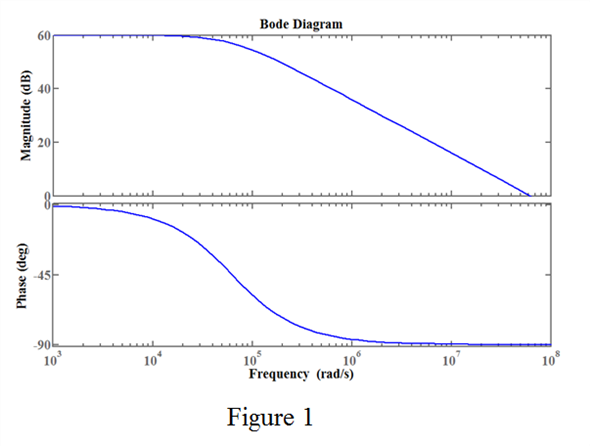
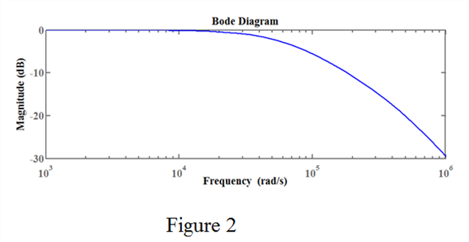

Step 1:
(a)
Write the expression of high-frequency gain function.
Here,
 is the midband gain,
is the midband gain,
is transfer function.
Consider that the dc gain of the amplifier is 60 dB.
Consider also that the system has a single-pole high-frequency response with a 3-dB frequency of 10 kHz.
Here,
The 3-dB frequency, .
Write the expression for the gain function.
Therefore, the expression for the gain function is.
Step 2:
(b)
Simplify the gain function as a transfer function to draw the Bode plot.
Replace  with
with .
.
Find the magnitude and phase of the gain function.
Step 3:
Plot the Bode diagram:

Step 4:
(c)
Determine the value of gain-bandwidth product.
This value is also matched with the value in the Magnitude plot in Figure 1.
Therefore, the gain-bandwidth product of the amplifier is .
Step 5:
(d)
Determine the frequency at which the gain of the amplifier is unity.
The gain-bandwidth product and the unity-gain frequency are same for a low pass filter.
Therefore, the unity-gain frequency of the amplifier is .
.
Step 6:
(e)
Consider that the transfer function acquire another pole at 100 kHz.
Write the expression for the high-frequency response.
Here,
The lower cutoff frequency, , and
The upper cutoff frequency, .
Write the expression for the gain function.
Therefore, the expression for the gain function  is.
is.
Step 7:
Simplify the gain function as a transfer function to draw the Bode plot.
Replace  with
with  to find the magnitude and phase of the gain function.
to find the magnitude and phase of the gain function.
Step 8:
Plot the Bode diagram:

The unity-gain frequency  is or 1 MHz from the magnitude plot in Figure 2.
is or 1 MHz from the magnitude plot in Figure 2.
The gain-bandwidth product and the unity-gain frequency are not same for this amplifier.